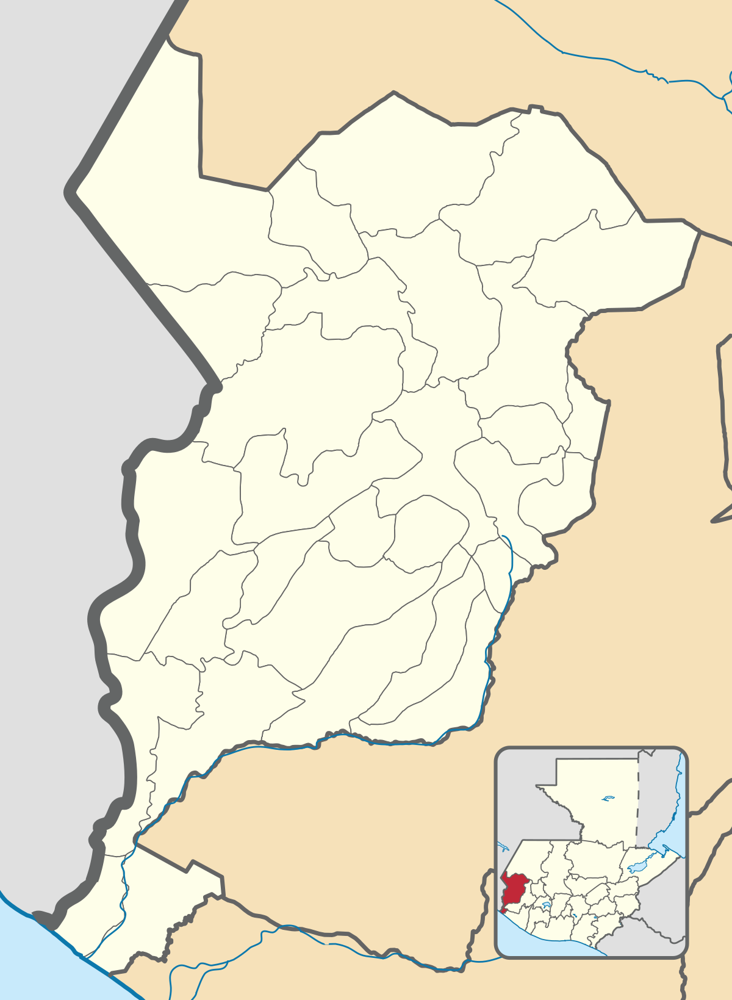

Geografía
Al departamento de San Marcos lo atraviesa la Sierra Madre, por lo que todas las tierras cercanas al norte son quebradas. Las situadas hacia el sur son casi planas, por lo que el clima es templado en el norte y en el sur es caliente. Esta variedad de climas se observa debido a las diferencias de alturas, las cuales varían entre los 3 200 metros sobre el nivel del mar en Ixchiguán y los 3.71 metros en Ocós (Diccionario Municipal de Guatemala, 2001).
Dentro de su territorio se encuentran varios volcanes, sobresaliendo el Tajumulco, considerado el más alto de Centroamérica, pues alcanza los 4200 metros sobre el nivel del mar, así como el Tacaná con 4022. Tiene también varios cerros, siendo el más alto el cerro San Antonio Ixchiguán, que tiene una altura de 3033 metros (Diccionario Municipal de Guatemala, 2001).
A San Marcos lo riegan varios ríos, como el Río Suchiate, que sirve de límite con México, el cual desemboca en el Océano Pacífico. Además, están los ríos Grande y el Rodeo, Río El Ocosito o Tilapa en Ocós, el Río Cabuz, el Río Nahuatán y algunos otros (Diccionario Municipal de Guatemala, 2001).